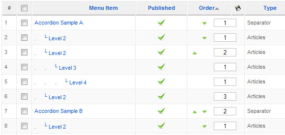
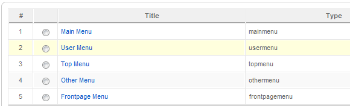

This tutorial shows you, how to setup the Accordion Menu in a YOOtheme template before we implemented the Warp framework in all templates since July 2009.
For example, your menu structure could look like this:
The menu item with the label Accordion Sample A is the Accordion menu trigger which, when clicked, will show the sub level items.
To add the accordion menu effect to a new menu like othermenu2 you need to do this:
Edit lib/php/yootools.php (somewhere around line 35):
/* menu */
"accordionMenu" => array("mainmenu" => 2, "othermenu" => 1, "usermenu" => 1)And add your accordion level and menu name, example for "othermenu2":
/* menu */
"accordionMenu" => array("mainmenu" => 2, "othermenu" => 1, "usermenu" => 1, "othermenu2" => 1)You can find the name of the menu by clicking on menus --> menumanager, there in the column "Type" you will find the name:
Open lib/js/yoo_tools.js and look for the YOOAccordionMenu code.
Use the option slide to make it possible to open more than one sub menu item at the same time.
new YOOAccordionMenu('div#middle ul.menu li.toggler', 'ul.accordion', { accordion: 'slide' });
Use option default to close all expanded submenu items when another submenu item is clicked.
new YOOAccordionMenu('div#middle ul.menu li.toggler', 'ul.accordion', { accordion: 'default' });